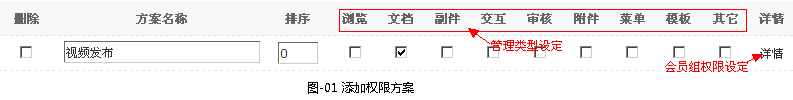
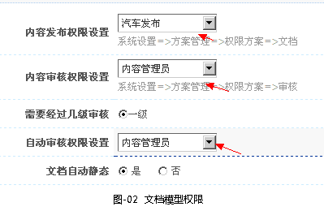
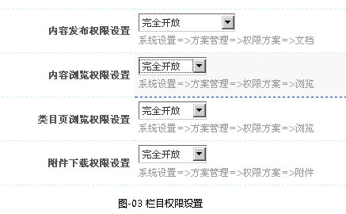
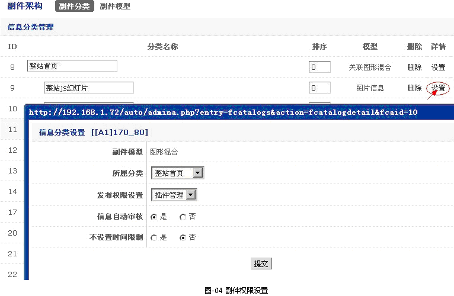

权限方案设置
一、前言
权限优先级配置：栏目配置权限->文档模型配置权限
相关权限方案相关说明：
内容发布权选项：在系统设置->方案管理->权限方案（勾选〖文档〗类型方案）设置
内容审核权限选项：在系统设置->方案管理->权限方案（勾选〖审核〗类型方案）设置
自动审核权限选项：在系统设置->方案管理->权限方案（勾选〖审核〗类型方案）设置
内容浏览权限选项：在系统设置->方案管理->权限方案（勾选〖浏览〗类型方案）设置
类目页浏览权限选项：在系统设置->方案管理->权限方案（勾选〖浏览〗类型方案）设置
附件下载权限选项：在系统设置->方案管理->权限方案（勾选〖附件〗类型方案）设置
副件发布权限选项：在系统设置->方案管理->权限方案（勾选〖副件〗类型方案）设置
二、权限方案设定
-
在系统设置->方案管理->权限方案->添加权限方案->编辑管理(为权限方案项配置权限类型和会员组权限)，如图-01所示。

三、文档模型权限设定
-
在网站架构->文档模型->文档模型管理->选择具体模型->详情 ，如图-02所示。

四、栏目权限设置(没有特别必要这里可以不用设置，它会继承文档模型内的设置属性)
-
在网站架构->类目管理->栏目管理->选择具体栏目->详情 ，如图-03所示。

注：在添栏目时选择了具体的文档模型后她就具备该文档模型设定权限
五、副件权限设置
-
在网站架构->副件架构->模型分类->选择具体副件分类->设置 ，如图-04所示。

a.发布权限设置：选择一个权限方案选项，设置副件发布权限
b.信息自动审核：在发布的同时是否立即审核通过
c.是否设置时间限制：是否在控制副件文档发布时间，如选是即当时间超过设定时间时副件文档失效，不会在前后显示